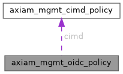

|
AXIAM C SDK 1.0.0-beta17
C11 client SDK for AXIAM (CONTRACT.md §1-§7, §9-§11, §13 incl. §6.1 mTLS)
|
OpenID Connect surface controls (X7 G8, plan §4.6/§4.8; T21.4). More...
#include <management_models.h>

Data Fields | |
| axiam_mgmt_cimd_policy_t * | cimd |
T21.5 — whether a URL-shaped client_id is resolved by fetching the document it names, and on what terms. | |
| char ** | dcr_allowed_redirect_hosts |
T21.4 — hosts a self-registered client's redirect_uris may point at, as globs (*.example.com, or * for any). | |
| size_t | dcr_allowed_redirect_hosts_count |
Entries in dcr_allowed_redirect_hosts. | |
| char ** | dcr_allowed_scopes |
| T21.4 — the scopes a self-registered client may ask for. | |
| size_t | dcr_allowed_scopes_count |
Entries in dcr_allowed_scopes. | |
| long | dcr_max_clients |
| T21.4 — how many externally registered clients this tenant may hold. | |
| int | has_dcr_max_clients |
1 when dcr_max_clients is set. | |
| long | dcr_unused_client_ttl_days |
| T21.4 — how long an externally registered client survives without being used. | |
| int | has_dcr_unused_client_ttl_days |
1 when dcr_unused_client_ttl_days is set. | |
| char * | default_locale |
The BCP 47 tag the sign-in page falls back to when the relying party's ui_locales selects nothing (W5's chain, plan §4.6). | |
| char * | dynamic_registration |
| T21.4 — whether a client may register itself (RFC 7591), and on what terms. | |
| char ** | external_client_allowed_resources |
| D3 — the audiences an externally registered client may address. | |
| size_t | external_client_allowed_resources_count |
Entries in external_client_allowed_resources. | |
| int | sensitive_scopes_enabled |
Whether address and phone may be registered on a client, requested at the authorization endpoint, and released at UserInfo (X7 G8). | |
OpenID Connect surface controls (X7 G8, plan §4.6/§4.8; T21.4).
Settings that are not password rules, here because this is the org-baseline-plus-tenant-override surface every other per-tenant control lives on. They are not all of the same kind as each other, and which is which is the whole of what [validate_tenant_override] and [clamp_overrides_to_org] read, so it is set out rather than inferred. Ordered — a tenant may be stricter than its organization and never more permissive: * [Self::sensitive_scopes_enabled], validated disable-only — the mirror image of mfa_enforced, because releasing personal data is the less-restrictive direction, so a tenant can turn its organization's decision off but never on. * [Self::dynamic_registration], on the ladder disabled → initial_access_token → anonymous: a tenant may move down it and never up. * [Self::dcr_max_clients] and [Self::dcr_unused_client_ttl_days], on the ordinary tenant <= org rule — with the wrinkle that 0 on the second means never sweep, which is the longest window of all and is handled by [dcr_ttl_strictness]. Not ordered, therefore never validated against the baseline and never clamped: * [Self::default_locale]. A language is a presentation preference; there is no sense in which Italian is stricter than French. * [Self::dcr_allowed_scopes], [Self::dcr_allowed_redirect_hosts] and [Self::external_client_allowed_resources]. Each names per-tenant resources — this tenant's MCP servers, this tenant's callback hosts — and there is no sense in which one such list is stricter than another. A subset rule would force an organization to enumerate every tenant's resource servers in its own baseline before any tenant could name one. The model's rule is "a tenant may only be more restrictive", which binds every field that has a restrictiveness; a field that has none cannot violate it. One cross-field interlock spans both groups and is checked on the resolved policy rather than on either input: see [validate_dcr_policy].
| axiam_mgmt_cimd_policy_t* axiam_mgmt_oidc_policy::cimd |
T21.5 — whether a URL-shaped client_id is resolved by fetching the document it names, and on what terms.
See [CimdPolicy]; off unless somebody turns it on (I1). Nested, and therefore inherited or overridden whole: the fields are terms of one decision, and a half-merged posture is one neither the organization nor the tenant wrote. Optional.
| char** axiam_mgmt_oidc_policy::dcr_allowed_redirect_hosts |
T21.4 — hosts a self-registered client's redirect_uris may point at, as globs (*.example.com, or * for any).
The loopback hosts (127.0.0.1, [::1], localhost) are always allowed whatever this says, because RFC 8252 §7.3 is how every desktop MCP client receives its callback and a tenant that forbade them would have turned registration on for nobody. Optional.
| size_t axiam_mgmt_oidc_policy::dcr_allowed_redirect_hosts_count |
Entries in dcr_allowed_redirect_hosts.
| char** axiam_mgmt_oidc_policy::dcr_allowed_scopes |
T21.4 — the scopes a self-registered client may ask for.
A scope a registration names that is not on this list is invalid_client_metadata; an empty list means a self-registered client gets no scopes at all, which is the honest default for a tenant that has turned registration on without deciding what it grants. May not contain address or phone — see this module's [sensitive_scope_in_dcr_list]. Optional.
| size_t axiam_mgmt_oidc_policy::dcr_allowed_scopes_count |
Entries in dcr_allowed_scopes.
| long axiam_mgmt_oidc_policy::dcr_max_clients |
T21.4 — how many externally registered clients this tenant may hold.
See [DEFAULT_DCR_MAX_CLIENTS]. Counted once per mechanism, against the same number (T21.8): managed_by: dcr rows and managed_by: cimd rows each have this many. So a tenant running both cannot have shadow rows materialised from documents exhaust the allowance for self-registration, or the reverse. The CIMD count is checked before the document is fetched, so a tenant at its ceiling is not an outbound amplifier either. It keeps its dcr_ name because dynamic registration defined it, on the same precedent as [Self::dcr_allowed_scopes]. Optional.
| int axiam_mgmt_oidc_policy::has_dcr_max_clients |
1 when dcr_max_clients is set.
| long axiam_mgmt_oidc_policy::dcr_unused_client_ttl_days |
T21.4 — how long an externally registered client survives without being used.
See [DEFAULT_DCR_UNUSED_CLIENT_TTL_DAYS]. 0 disables the sweep for this tenant, which an operator who prunes out of band may legitimately want. Two sweeps read it, over different clocks (T21.8). A managed_by: dcr row is measured from its last authorization, falling back to when it was registered. A managed_by: cimd row is measured from the last time its document was presented, which every authorize, token and PAR request moves — so a document in daily use is never swept however old its registration is, and one nobody has presented since the window is, and re-materialises on the next request if it is still published. Like the ceiling, it keeps its dcr_ name. Optional.
| int axiam_mgmt_oidc_policy::has_dcr_unused_client_ttl_days |
1 when dcr_unused_client_ttl_days is set.
| char* axiam_mgmt_oidc_policy::default_locale |
The BCP 47 tag the sign-in page falls back to when the relying party's ui_locales selects nothing (W5's chain, plan §4.6).
None means "no tenant preference", which lands on the deployment default (en) — the behaviour every deployment had before this field existed. A tag this build does not ship also lands there: the parse is exact rather than a language lookup, so a stored fr-CA reads as "somebody wrote
something this binary does not ship" rather than as a guess at French. Stored as a string rather than as the Locale enum because that enum lives in axiam-oauth2, four layers above this crate, and the crate layering points inward. Optional.
| char* axiam_mgmt_oidc_policy::dynamic_registration |
T21.4 — whether a client may register itself (RFC 7591), and on what terms.
disabled unless somebody says otherwise (I1). Optional.
| char** axiam_mgmt_oidc_policy::external_client_allowed_resources |
D3 — the audiences an externally registered client may address.
The single most important field on this policy, and the reason the settings handler refuses dynamic_registration: anonymous while it is empty. A client an unrelated party registered cannot declare its own allowed_resources; it inherits this list verbatim, so what a stranger can mint a token for is a decision the tenant took in advance rather than one the registration request makes. Empty means an externally registered client can obtain only today's axiam:user tokens — which AXIAM's own APIs accept. That is why the interlock exists: the empty list is not a safe default for an open registration endpoint, it is the most dangerous one. Shared with T5 (CIMD), which inherits the same list for the same reason. Optional.
| size_t axiam_mgmt_oidc_policy::external_client_allowed_resources_count |
Entries in external_client_allowed_resources.
| int axiam_mgmt_oidc_policy::sensitive_scopes_enabled |
Whether address and phone may be registered on a client, requested at the authorization endpoint, and released at UserInfo (X7 G8).
Off unless an organization turns it on. The two scopes release a postal address and a telephone number — categories of personal data AXIAM has no other use for — so the deployment that has never thought about them releases nothing, and the operator who has thought about them says so once, at the organization level, where the lawful basis for holding the data was decided. The switch is a capability, not a grant: with it on, a client still has to register the scope, the request still has to ask for it, and the user still has to have consented. It is the first of four gates, and it is the only one an operator can close for everybody at once.